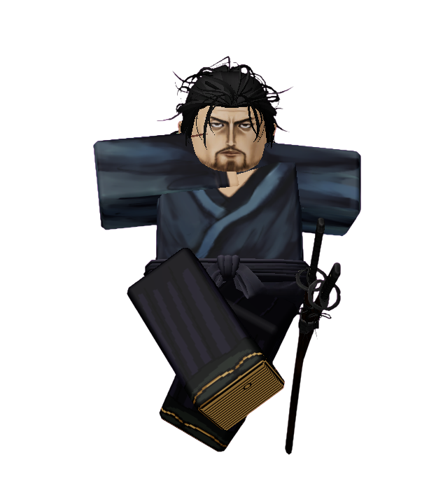

◆ ARCHIVE — MONITORED ◆
Musashi Miyamoto
Status: SAFE
Archive Classification: MONITORED
Threat Level: HIGH
APPROACH WITHOUT HOSTILITY
Quote
"The greatest battle is the one fought within yourself."
Short Bio
Musashi Miyamoto is one of the calmest contestants in Anime Showdown Ultimax.
Despite carrying a sword and possessing incredible skill, Musashi rarely seeks conflict. Instead, he spends much of his time walking the island, observing nature, and speaking with anyone willing to share their thoughts.
Many contestants mistake his kindness for weakness.
None of them keep that belief for long.
How He Arrived
Before ASU
Before arriving on the island, Musashi wandered the countryside alone.
The years had taught him that strength meant very little without understanding.
As he rested beneath an old tree, the wind suddenly stopped.
The sounds of nature faded.
When he opened his eyes once more... the world had changed.
Arrival
Musashi accepted the island almost immediately.
He did not ask who had brought him there.
Nor did he ask why.
Instead, he quietly observed the people around him.
To understand another person... one must first listen.
Personality
Musashi is patient, humble, and deeply thoughtful.
He believes every person has something worth learning from.
Although he is capable of incredible violence, he views combat as a last resort rather than a solution.
To Musashi, true strength is measured not by how many battles someone wins...
But by how much they grow from them.
Current Story
Musashi has become one of Team 2's most respected members.
While others argue over strategy or power, Musashi often remains silent, speaking only when he believes his words will truly matter.
Even Joker has admitted that some of Musashi's advice has changed the way he views the competition.
The Host expected Musashi to become another weapon.
Instead... he became a source of peace.
Relationships
Allies
- Gyro Zeppeli — Musashi enjoys Gyro's optimism and believes his heart is stronger than his fists.
- David Martinez — David reminds Musashi that courage can exist without experience.
- Joker — Although very different, both seek truth in their own way.
Rivals
- Adam Smasher — Musashi believes Adam has forgotten what it means to be human.
Enemies
- The Host — Musashi sees the Host as someone consumed by control instead of understanding.
Threat Assessment
Archive Classification:
MASTER SWORDSMAN
Lore
Unlike many contestants, Musashi never became obsessed with escaping.
He believes every place has something to teach those willing to learn.
Recovered Archive notes suggest the Host has attempted several times to provoke Musashi into losing his temper.
Every attempt has failed.
One deleted observation reads:
"He cannot be controlled through anger."
Another simply states:
"Perhaps peace is stronger than fear."
The second observation was deleted immediately afterward.
Additional Notes
- Frequently meditates before challenges.
- Has been seen helping contestants train without expecting anything in return.
- Often spends hours sitting quietly, watching the ocean.
- Rarely raises his voice.
- Has defeated multiple contestants without seriously injuring them.
- Several contestants have described conversations with Musashi as "life changing."
The sword is only as dangerous as the heart that guides it.